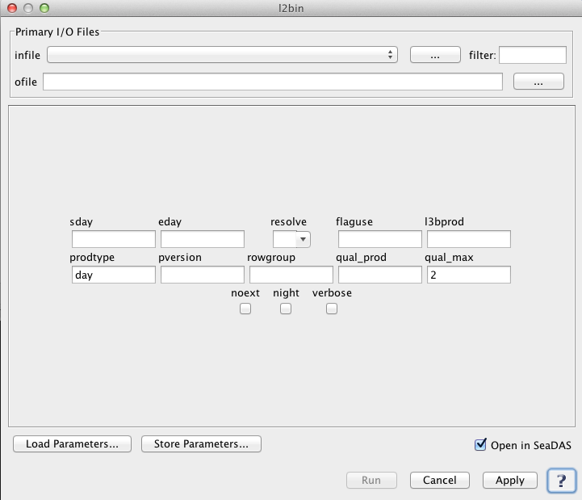

| l2bin | |
Creates a Level 3 bin file from one or more Level 2 input files.
Location
Details
Command Line Usage
Tools -> OCSSW Processing -> l2bin
<l2bin performs spatial/temporal binning of SeaWiFs, MODIS, and OCTS Level-2 data files.
|  |
| UI Element Name | Type | Description | Required/Optional | Default Value |
| infile | Text Field | input filename/filelist | Required | |
| ofile | Text Field | output bin filename | Required | |
| sday | text | start datadate (YYYYDDD) [ignored for "regional" prodtype] | Optional | |
| eday | int | end datadate (YYYYDDD) [ignored for "regional" prodtype] | Optional | |
| resolve | text | bin resolution (H,1,2,4,9,36)
H - 500m
1 - 1km
2 - 2km
4 - 4km
9 - 9km
36 - 36km
|
Optional | 9 |
| suite | text | Optional | ||
| flaguse | text | flags masked | Optional | [see /SENSOR/l2bin_defaults.par] |
| l3bprod | text | bin products
Set to "ALL" or "all" for all L2 products in 1st input file.
Use ':' or ',' or ' ' as delimiters.
Use ';' or '=' to delineate minimum values.
|
Optional | all products |
| prodtype | text | product type (Set to "regional" to bin all scans.) | Optional | day |
| pversion | Text Field | production version | Optional | |
| noext | boolean | Check to suppress generation of external files [default=0, (1 for "regional" prodtype)] | Optional | false |
| rowgroup | int | number of bin rows to process at once | Optional | |
| night | boolean | Check for SST night processing | Optional | false |
| qual_prod | Text Field | quality product field name | Optional | |
| qual_max | int | maximum acceptable quality | Optional | 2 |
| UI Element Name | Type | Description |
| Browser Button | Button | Selects infile/ofile |
| Load Parameters ... | Button | Reads in previously saved parameters and populates the fields in GUI. |
| Save Parameters ... | Button | Saves the current arguments in GUI in a file. |
| Run | Button | Executes the l2bin command with arguments provided in the UI. |
| Cancel | Button | Closes current processor GUI. |
| Apply | Button | Makes current arguments effective. |
| Open in SeaDAS | Checkbox | If selected, the ofile will be added to the open products list right after its generation. |
| ? | Button | Displays the help content of the current command. |
Usage: l2bin parfile=parfile or
infile=infile ofile=ofile [sday=sday] [eday=eday]
resolve=resolve [flaguse=flaguse] [l3bprod=l3bprod]
[prodtype=prodtype] [noext=noext] [verbose=verbose
[rowgroup=rowgroup] [night=night] [pversion=pversion]
parfile = parameter filename
infile = input filename/filelist
ofile = output bin filename
sday = start datadate (YYYYDDD) [ignored for "regional" prodtype]
eday = end datadate (YYYYDDD) [ignored for "regional" prodtype]
resolve = bin resolution (H,1,2,4,9,36)
flaguse = flags masked [see /SENSOR/l2bin_defaults.par]
l3bprod = bin products [default=all products]
Set to "ALL" or "all" for all L2 products in 1st input file.
Use ':' or ',' or ' ' as delimiters.
Use ';' or '=' to delineate minimum values.
prodtype = product type (Set to "regional" to bin all scans.) [default=day]
pversion = production version [default=Unspecified]
noext = set to 1 to suppress generation of external files
[default=0, (1 for "regional" prodtype)]
rowgroup = # of bin rows to process at once.
night = set to 1 for SST night processing [default=0]
qual_prod = quality product field name
qual_max = maximum acceptable quality [default=2]
verbose = Allow more verbose screen messages [default=0]